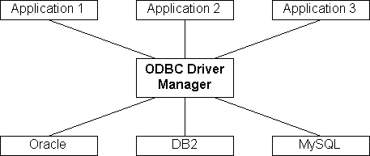
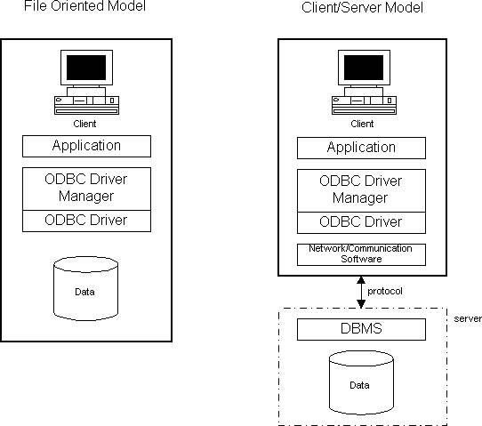
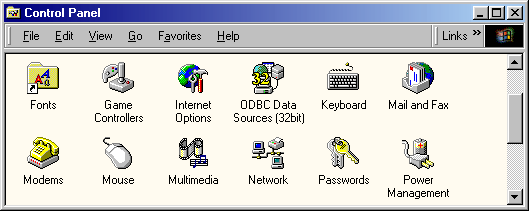
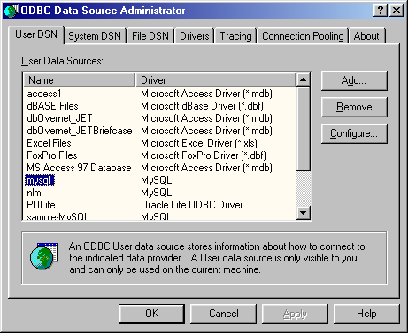
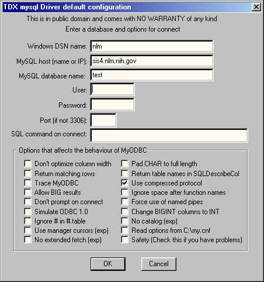

An ODBC Interface for the Unicon Programming Language
Unicon Technical Report: 1b
2002-06-28
Abstract
The implementation of an ODBC interface for the Unicon language allows programmers to interface their applications to local and remote database management systems with a high level of interoperability and SQL language support.
1. Introduction
The Unicon ODBC interface consists of a data type and a set of new functions to enable Unicon programs to access database management systems (DBMS). The standard language to retrieve and manipulate data in a DBMS is the structured query language SQL.
1.1 Overview
ODBC is a programming interface (API) to access local and remote database management systems. ODBC is a de facto industry standard and works on many different operating systems and programming languages. It shields programmers from the complexity of different databases and the communications software used to access the data. ODBC defines an object called a "data source" that is referenced by name and maps its name to the exact location of data (network software, server name, database name and user information if needed).
1.2 ODBC Architecture
ODBC allows multiple applications to access to multiple data sources using an architecture (Figure 1) that consists of several layers:
- A Driver Manager to add, configure and remove different DBMS drivers.
- A set of drivers that implement the ODBC API for a particular DBMS.
- Networking software to allow network access to the database.
- The DBMS.
|

| Figure 1: ODBC Architecture
Applications call ODBC functions. The Driver Manager decides which driver is needed and loads it into memory. After this the Driver Manager routes ODBC calls to the driver.
The minimum capability required from a driver is to be able to connect to a server, send SQL statements and retrieve the results. What is important is that the Driver Manager hides all the details related to the server so the application does not need to know if the data is on a local file, a network file server or a remote host.
1.3 Client/Server Model
ODBC was designed to work with the client/server model (Figure 2) in order to satisfy the following requirements:
- A standard application programming interface.
- Access to the particular features of any DBMS.
- Performance comparable to DBMS native API.
|

| Figure 2: Client/Server Model
1.4 ODBC Installation
After deciding which DBMS an application is going to use it is necessary to install its related ODBC driver to let the application establish a connection with the DBMS.
For our ODBC tests we decided to use MySQL. MySQL is a free SQL server downloadable at www.mysql.org _ and available for most popular platforms. We tested both Linux and Sun/Solaris version. MySQL comes with MyODBC, the ODBC driver for the server, and it can be downloaded at the same web site. There are driver versions both for Unix and Windows.
MyODBC comes with a standard Windows setup.exe program. At one point during setup you have to physically click on MyODBC within a list-box to install successfully, but otherwise installation is uneventful. If installation is successful, when you are finished you will be able to see your MySQL data source(s) from the ODBC Data Sources control within the Windows Control Panel (Figure 3).
|

| Figure 3: The Control Panel windows
|

| Figure 4: The Driver Manager
This control comprises the main interface of the ODBC Driver Manager (Figure 4). The ODBC Driver Manager lists the ODBC drivers installed for different DBMSes. We can add new drivers, remove or configure existing ones within this control. The MyODBC setup program automatically adds and configures the driver in the Driver Manager's driver list.
After installing MyODBC we can open the Driver Manager and take a look at the different configuration parameters (Figure 5).
|

| Figure 5: MyODBC configuration
The MyODBC configuration panel has the following fields:
- Windows DSN name : DSN stands for Data Source Name and it contains the alias that we will use in our applications to reference a particular database.
- MySQL host : is contains the Internet domain name or IP address of the server we want to connect to.
- MySQL database name : name of the database that this data source refers to.
- User : database user name. For better security this field can be left empty and specified within an application.
- Password : database user password. For security this field can be also left empty and specified during application runtime.
- Port : this field is the port where MySQL server listens for connection. If left empty the default value is 3306.
- SQL command on connect : this field can contain an SQL command that is executed when the application first connects to the server.
All the other check-boxes are driver options. Of particular note are the following options:
- Trace MyODBC : traces the driver activity on a log file C:\\MYODBC.TXT. This is useful to find errors within an application.
- Use compressed protocol : this option enables data compression in order to speed up data transfer on slow connections. This is recommended on fast computers.
- Read options from C:\\my.cnf : this option lets the driver read a particular configuration from a file. This helps administrators to easily configure several client machines by including c:\\my.cnf in the application distribution.
1.5 Unicon ODBC Interface
The Unicon ODBC interface is a set of built-in functions that allow an easy way to write SQL database applications.
The function set can be divided in four main groups. A synopsis of these functions is given here. The reference section towards the end of this document describes them in detail.
- Connection: handle Unicon connection with a DBMS.
- open(dsn, "o", username, password): opens a connection to the database server and the specified table.
- close(db): closes a table and the related database connection.
- Catalog or information: used to retrieve information about drivers, databases and tables (for example driver capabilities, database organization, tables description).
- dbcolumns: gets information about a specific table columns.
- dbdriver: gets information about a specific ODBC driver in use.
- dbkeys: gets information about a particular table primary keys.
- dbproduct: gets information about the DBMS product the in use.
- dbtables: get information about a tables that belong to a specified database.
- Data retrieval: to load data from a DBMS to Unicon data structures.
- fetch : fetches a row from a rowset.
- General: to interact directly with the DBMS using SQL commands. This can be used to send arbitrary SQL commands including extensions particular to a specific DBMS implementation.
- sql(db, s): sends an SQL command string to the server for execution.
2. An Example Phonebook Application
A typical database application performs the following tasks:
- Connects to a database
- Processes database information
- Disconnects from the database
This section presents a simple Unicon phonebook application that takes advantage of the ODBC interface and work with MySQL server. The example will show how to use the main Unicon ODBC functions in order to connect, read and write data on a DBMS.
Our application will have the following menu:
- Insert a phone number
- Delete a phone number
- Modify a phone number
- List phone number in database
Note that this application assumes a preexisting database server. a user account on that server, and a table on the server has been created to store the phone book information. Let's create a phones table on our server with the following columns:
| Column Name | Type |
| Name (KEY) | VARCHAR(40) |
| Phone | VARCHAR(12) |
| Address | VARCHAR(60) |
We could create such a table within the application by appropriate Unicon ODBC calls, but perhaps it is more typical for such database administration tasks to be performed separately by a database administrator. From our server machine we invoke the mysql client program to talk to the SQL server:
| [fbalbi@icon bin]$ ./mysql -ufbalbi -p mysql | Enter password: | Reading table information for completion of table and column names | You can turn off this feature to get a quicker startup with -A | Welcome to the MySQL monitor. Commands end with ; or \\g. | Your MySQL connection id is 96 to server version: 3.22.15-gamma
Type 'help' for help.
Now let's create the example table with the column Name as primary key:
mysql>
create table phones (name varchar(40) primary key, phone varchar(12), address varchar(60));
Query OK, 0 rows affected (0.04 sec)
mysql>
describe phones;
+---------+-------------+------+-----+---------+-------+
| Field | Type | Null | Key | Default | Extra |
+---------+-------------+------+-----+---------+-------+
| name | varchar(40) | | PRI | | |
| phone | varchar(12) | YES | | NULL | |
| address | varchar(60) | YES | | NULL | |
+---------+-------------+------+-----+---------+-------+
3 rows in set (0.01 sec)
Now the table is properly created and empty, in fact the following select commands returns an empty set:
mysql>
select \* from phones;
Empty set (0.00 sec)
Here the full list of our phonebook application. As an exercise, you may wish to consider how you would extend this application to include the above table-creation task as another menu option. Hint: the function sql() may come in handy.
# global variables
global db
global user, password
record person(name, phone, address) # database row
procedure main() # main program
write("*** Unicon ODBC phonebook ***\n\n")
login() # get user name and password
# connect to mysql data source and open table "phones"
db := open("mysql", "o", user, password)
if &errornumber~=0 then { # error during login
write(&errortext)
}
else {
getdbinfo() # print database information
repeat {
menu() # print menu options
option := read()
case option of {
"i": insertphone()
"d": deletephone()
"u": updatephone()
"l": listphones()
"q": break
default: write("*** wrong selection ***")
}
}
close(db) # close table and database connection
}
write("bye")
end
#
# user information
#
procedure login()
writes("user: ")
user := read()
writes("password: ")
password := read()
end
#
# get database name and version
#
procedure getdbinfo()
info := dbproduct(db)
write("\nDBMS: ", info["name"])
write("version: ", info["ver"])
end
#
# display menu options
#
procedure menu()
write("\nI)nsert")
write("D)elete")
write("U)pdate")
write("L)ist")
write("Q)uit\n")
end
#
# insert a new record
#
procedure insertphone()
writes("name: ")
name := read()
writes("phone: ")
ph := read()
writes("address: ")
addr := read()
sql(db, "INSERT INTO phones VALUES(" ||
name || "," || ph || "," || addr || ")")
if &errornumber~= 0 then
write("*** couldn't insert person ***")
end
#
# remove a record
#
procedure deletephone()
writes("name to remove: ")
name := read()
# delete row with specified name column
sql(db, "DELETE FROM phones WHERE name='"||name||"'")
end
#
# update a record
#
procedure updatephone()
writes("name to update: ")
name := read()
# select all columns of rows with specified name column
sql(db, "SELECT * FROM phones WHERE name='"||name||"'")
if row := fetch(db) then { # data found
writes("phone (",row["phone"],"): ")
row["phone"]:=read()
writes("address (",row["address"],"): ")
row["address"]:=read()
# update row on server
sql(db, "UPDATE phones SET " ||
"phone='" || row["phone"] || "'" ||
",address='" || row["address"] || "'" ||
" WHERE name='" || row["name"] || "'")
)
}
else write("\n\n*** person not found ***")
end
#
# list all people in the database
#
procedure listphones()
sql(db, "SELECT * FROM phones") # select all columns and all rows
while row := fetch(db) do { # while data found
# write row fields
every i:=(1 to *row) do writes("[",row[i],"]")
write()
}
end
| |
3. Unicon ODBC Function Reference
With the exception of
open()
which
returns
a file reference to an ODBC connection, all these functions generally take an initial parameter (designated by
f
which must be an ODBC file previously opened with
open(...,"o")
. Since it is used consistently everywhere, this initial parameter is not given in the detailed description of the rest of the function parameters.
close(f) : closes an ODBC file
Code Example
procedure main()
db:=open("mydb","o","federico","mypassword")
#
# ...program body...
#
close(db) # close table and disconnect
end
dbcolumns(f,t) : L : return column information related to table t in database f
Parameters
- tablename : string name of the SQL table to examine
Return Type: list of records with the following string fields:
- catalog: catalog name
- schema: schema name
- tablename: table name
- colname: column name
- datatype: SQL data type
- typename: data source-dependent data type name
- colsize: if datatype is SQL_CHAR or SQL_VARCHAR this columns contains the maximum length in characters of the column
- buflen: length in bytes of data transferred on a fetch operation
- decdigits: the total number of significant digits to the right of the decimal point
- numprecradix: for numeric data types either 10 or 2. If it is 10, the values in columnsize and decimaldigits give the number of decimal digits allowed for the column. If it is 2, the values in columnsize and decimal digits give the number of bits allowed in the column
- nullable: 0 if the column could not include NULL values; 1 if the columns accept NULL values; 2 if it is not known whether the column accepts NULL values.
- remarks: a description of the column
Code Example
procedure main()
f := open("mysql","o","federico","") # open table
colinfo := dbcolumns(f) # get columns information
write("column info\n")
every i := 1 to *colinfo do { # for each column
writes("col #",i,": ")
every j := 1 to *colinfo[i] do # write column's info
writes("[",colinfo[i][j],"]")
write()
}
write()
close(f) # close table and connection to the database
end
dbdriver(f) : returns information about the driver being used
Return Type: Record with the following string fields:
- "name": filename of the driver used to access the data source.
- "ver": version of the driver and, optionally a description of the driver.
- "odbcver": version of ODBC that the driver supports.
- "dsn": A caracter string with the data source name used during connection.
- connections: maximum number of active connections that the driver can support (zero for no specified limit or if the limit is unknown).
- statements: maximum number of statements that the driver can support for a connection (zero for no specified limit or if the limit is unknown).
Code Example
procedure main()
f := open("mydb","o","fbalbi","") # open mytable
dinfo := dbdriver(f) # get driver information record
write("driver name : ", dinfo["name"])
write("driver version : ", dinfo["ver"])
write("driver ODBC ver : ", dinfo["odbcver"])
write("connections : ", dinfo["connections"])
write("statements : ", dinfo["statements"])
write("data source name: ", dinfo["dsn"])
close(db) # close database connection
end
dbkeys(f) : returns information about the primary key columns
Return Type: list of records with the following string fields:
- col: column name.
- seq: sequence number.
Code Example
procedure main()
f := open("mydb","o","fbalbi","passwd") # open table
write(*f, " row(s) selected")
write("\ntable keys")
krec := dbkeys(f) # retrieve primary key information
every i := 1 to *krec do {
r := krec[i]
write("[", r["col"], "]") # print key name
}
close(f) # close table
end
dblimits(f) : returns information about the limits applied for identifiers and clauses in SQL statements.
Return Type: record with the following string fields:
- " maxbinlitlen ": maximum length of a binary literal in an SQL statement. if there is no maximum length or the length is unknown, this value is set to zero.
- " maxcharlitlen ": maximum length of a character literal in an SQL statement. if there is no maximum length or the length is unknown, this value is set to zero.
- " maxcolnamelen ": maximum length of a column name in the data source. if there is no maximum length or the length is unknown, this value is set to zero.
- " maxgroupbycols ": maximum number of columns allowed in a GROUP BY clause. If there is no specified limit or the limit is unknown, this value is set to zero.
- " maxorderbycols ": maximum number of columns allowed in a ORDER BY clause. If there is no specified limit or the limit is unknown, this value is set to zero.
- " maxindexcols ": maximum number of columns allowed in an index. If there is no specified limit or the limit is unknown, this value is set to zero.
- " maxselectcols ": maximum number of columns allowed in a SELECT list. If there is no specified limit or the limit is unknown, this value is set to zero.
- " maxtblcols ": maximum number of columns allowed in a table. If there is no specified limit or the limit is unknown, this value is set to zero.
- " maxcursnamelen ": maximum name length of a cursor name in the data source. If there is no specified limit or the limit is unknown, this value is set to zero.
- " maxindexsize ": maximum number of bytes allowed in the combined fields of an index. If there is no specified limit or the limit is unknown, this value is set to zero.
- " maxownnamelen ": maximum length of an owner name in the data source. If there is no specified limit or the limit is unknown, this value is set to zero.
- " maxprocnamelen ": maximum length of a procedure name in the data source. If there is no specified limit or the limit is unknown, this value is set to zero.
- " maxqualnamelen ": maximum length of a qualifier name in the data source. If there is no specified limit or the limit is unknown, this value is set to zero.
- " maxrowsize ": maximum length of a single row in a table. If there is no specified limit or the limit is unknown, this value is set to zero.
- " maxrowsizelong ": a character string: "Y" if the maximum row size returned for the "maxrowize" information type includes the length of all SQL_LONGVARCHAR and SQL_LONGVARBINARY columns in the row; "N" otherwise.
- " maxstmtlen ": maximum lenght (number of characters, including white space) of an SQL statement. If there is no maximum length or the length is unknown, this value is set to zero.
- " maxtblnamelen ": maximum length of a table name in the data source. If there is no maximum length or the length is unknown, this value is set to zero.
- " maxselecttbls ": maximum number of tables allowed in the FROM clause of a SELECT statement. If there is no maximum length or the length is unknown, this value is set to zero.
- " maxusernamelen ": maximum length of a user name in the data source. If there is no maximum length or the length is unknown, this value is set to zero.
Code Example
procedure main()
f := open("mydb","o","fbalbi","") # open mytable
dbl:=dblimits(f) # get DBMS limits information
# print out all DBMS limits
every i := 1 to *dbl do write(dbl[i])
close(f) # close table
end
dbproduct(f) : returns information about the DBMS accessed by the driver
Return Type: record with the following string fields:
- name: DBMS product name
- ver: DBMS version
Code Example
procedure main()
f := open("mydb","o","fbalbi","mypasswd") # open table
p := dbproduct(f) # get DBMS product information
write("product name: ", p["name"]) # print product name
write("product ver : ", p["ver"]) # print product version
close(f) # close table
end
dbtables(f): L : get information about tables stored in database f
Return Type: list of records with the following string fields:
- qualifier: table qualifier
- owner: table owner
- name: table name
- type: table type
- remarks: table remarks
Code Example
procedure main()
f := open("mysql","o","fbalbi","xxxxxxxx")
# get current database tables information
tablelist := dbtables(f)
# write number of tables
write("size list = ", *tablelist)
every i := 1 to *tablelist do { # for each table
r:=tablelist[i]
# print table information fields
every j := 1 to *r do writes("[",r[j],"]")
write()
}
close(f) # close table
end
fetch(f) : fetches and returns a row from a rowset
Return Type: record with fields names equal to the selected table columns (use sql(db, "SELECT...") for column selection)
Code Example
procedure main()
f := open("mydb","o","fbalbi","mypass")
# select 3 existing columns from table mytable
sql(f, "SELECT id, name, amt FROM mytable")
# *f = number of selected rows
# may not work with some DBMS
write(*f, " row(s) selected")
write("\nrow values")
# fetch returns a record whose
# fieldnames are the column names selected with a SQL SELECT
# in this example we can reference fields using row["id"],
# row["name"] and row["amt"]
while row := fetch(f) do { # while rows to retrieve
every col := 1 to *row do # for each col of row
writes("[",row[col],"]") # write row field
write()
}
close(f) # close table
end
open(db, "o", username, password) : connect to a database and returns the associated ODBC file.
Parameters:
- db: Data Source Name string (defined in ODBC Manager)
- user: database user string
- password: user password string
Code Example
procedure main()
# open "mytable" in mydb data source name defined in
# ODBC Data Sources (see Windows 9x Control Panel folder)
# using username "federico" and password "mypassword"
db := open("mydb","o","federico","password")
#
# ...program body...
#
close(db) # close table and disconnect
end
sql(f, query) : submits an SQL query using the connection opened by f
Parameters:
- query: SQL statement string
Code Example
procedure main()
# connect to DBMS and open table
db:=open("personnel_db","o","manager","passwd")
# prepare SQL query string to create an employees table
# of 5 columns
query := "CREATE TABLE employees (id INTEGER PRIMARY KEY,_
name VARCHAR(40), phone VARCHAR(12), DOB DATE,_
pay FLOAT)"
sql(db, query) # execute query
close(db) # close
end
| |
4. Conclusions
This interface is a successful, albeit low-level interface to SQL databases. It has been tested and proven effective on large real world data sets. SQL commands are constructed as strings, and Unicon excels at such text manipulation. This interface does not provide Unicon programmers with higher level abstractions of database capabilities. For example one original design goal was to allow programmers to interact with a database with minimum knowledge of SQL. For example, the built-in table data type does not match the SQL table abstraction exactly, but with proper operator support interactions with SQL tables could look very similar to interactions with Unicon tables.
| |
Appendix: Unicon ODBC Implementation Notes
The implementation of the ODBC interface includes changes to several files of the Unicon runtime system, as well as the addition of a new file for the new functions that were added.
New files
- FDB.R: This is the main file of Unicon ODBC. It contains the Unicon ODBC function set implementation. It is written in standard C with RTT extensions.
- RDB.R: contains the C implementation of odbcerror function that is widely called in FDB.R.
Modified files
- RPROTO.H: contains odbcerror function definition.
- OMISC.R: "\*" operator implementation for ODBC file type.
- FDEFS.H: ODBC function definitions.
- DATA.R: runerr error code for ODBC file mismatch.
- RSTRUCTS.H: ISQLFile definition (ODBC connection type).
- REXTERNS.H: ISQLEnv extern definition.
- RMACROS.H: Fs_ODBC file status flag and ODBC error codes.
- SYS.H: VisualC++ ODBC header files inclusion (windows.h and sqlext.h).
- INIT.R: ODBC Environment structure release.
- DEFINE.H: ISQL symbol definition for conditional compilation.
- GRTTIN.H: new ODBC types definitions.
- MAKEFILE.RUN: Runtime system makefile (FDB.R and RDB.R definitions added)
- ICONX.LNK: Link file (XFDB.OBJ and XRDB.OBJ definitions added)
ISQLFile type
In Unicon an ODBC connection to a database is similar to a file operation. Internally this is represented by the following C structure:
#ifdef ISQL /* ODBC support */
struct ISQLFile { /* SQL file */
SQLHDBC hdbc; /* connection handle */
SQLHSTMT hstmt; /* statement handle */
};
#endif
The field hdbc is used to keep the connection information associated to a particular ISQLFile file. hstmt is the statement structure that saves the results or dataset returned by an ODBC operation. The design of the interface is table oriented, which means that for each table we open a new connection.
In the future we will consider the possibility to associate a file to a database. This would let us open a connection for each database and share the same connection for each table within the same database. In this way we can open a file and use more than a table.
Actually when open(DSN,"o",user,password) is called Unicon allocates an ISQLFile object and initializes the structure fields in the following way:
- hdbc is related to the DSN specified in open()
- hstmt is related to hdbc
References
- Kyle Geiger. Inside ODBC. Microsoft Press, Redmond, Washington, 1995.
- Roger E. Sanders. ODBC 3.5 Developer's Guide. McGraw-Hill, 1998.
- Microsoft ODBC 2.0 Programmer's Reference Guide. Microsoft Press, Redmond, Washington, 1994.
- Microsoft ODBC 3.0 Programmer's Reference. Microsoft Press, Redmond, Washington, 1997.
- Ralph E. Griswold, Madge T.Griswold. The Icon Programming Language, 3\ rd ed.. Peer-to-Peer Communications, San Jose, 1997.
- Ralph E. Griswold. The Implementation of the Icon Programming Language. Princeton University Press, 1986.
- Clinton Jeffery, Shamim Mohamed, Ray Pereda, and Robert Parlett. Programming with Unicon. Draft manuscript from http://unicon.sourceforge.net.
- MySQL Reference Manual for version 3.23.2-alpha. From http://www.mysql.org
..
image:: Image4.gif :width: 462px :height: 202px ..
image:: Image5.gif :width: 560px :height: 491px ..
image:: Image6.gif :width: 529px :height: 211px ..
image:: Image7.gif :width: 461px :height: 377px ..
image:: Image8.gif :width: 452px :height: 482px